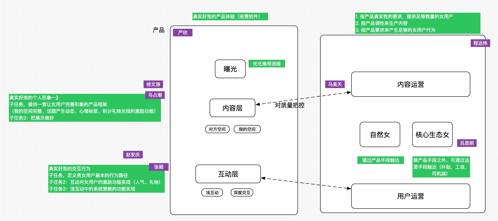

本周工作重心在做用户使用流程的详细设计、执行分工和资源分配。
几点思考
基本假设：
- 内容运营产生形成丰富
本周工作重心在做用户使用流程的详细设计、执行分工和资源分配。
基本假设：
产品符合 『真实好泡』的调性

目前团队精力base在第一个里程碑的进程之中，产品、内容运营、生态端的进展按计划在推进中。
重新明确了产品部门为整个产品的『真实好泡』的调性负责，内容运营端则负责保持生态女快速响应的运营体系贡献内容。
开始着手考虑下阶段的具体路径，下周集中力量频繁讨论。
产品符合 『真实好泡』的调性
短期：按照产品定义出的女用户形象调性，提供并运营种子生态女持续输出内容；
长期：运营生态女输出内容。
- 完成内容运营部门对种子生态女采集的要求（数量、质量）
- 维系核心生态女团队的运转并提升核心生态女的运转效率。
经过前几周的调整，新产品部门将目前的工作重心转移产品力提升上，即整体产品及提供的女用户形象给男用户传递『真实好泡』的产品调性。本期工作重点在补齐产品力短板，虽然矫枉过正，但用户体验最终会是左右整个产品的关键点。
本周任务拆解、路径、资源都已准备就绪，并确定了短期项目的里程碑，拆解的三个部分已经开始执行。
产品符合 『真实好泡』的调性
短期：按照产品定义出的女用户形象调性，提供并运用种子生态女输出内容；
长期：运营生态女输出内容。
- 完成内容运营部门对种子生态女采集的要求（数量、质量）
- 维系核心生态女团队的运转并提升核心生态女的运转效率。
对于王楠的团队，我给其定义的是 『基于动态富媒体内容的策略储备』，计划在产品开发完成后，迅速进入策略调试阶段。个人觉得这块还是很重要的，需要布置兵力在这块进行研发。
本周工作内容主要是对新产品前一个阶段的工作状况进行复盘和反思，经过对现状的梳理，找出待解救的关键性问题，并通过收缩业务范围，聚拢资源，合理调整组织结构，解决关键性问题。
对现状的梳理过程中，集中体现为一下几个问题：
本周一周基本处于同项目的反思及调整中，在部门层面做了如下几个事情：
下周对于分解的三个模块进行详细的阐述，以保证三个模块能按照预想的设计进行。